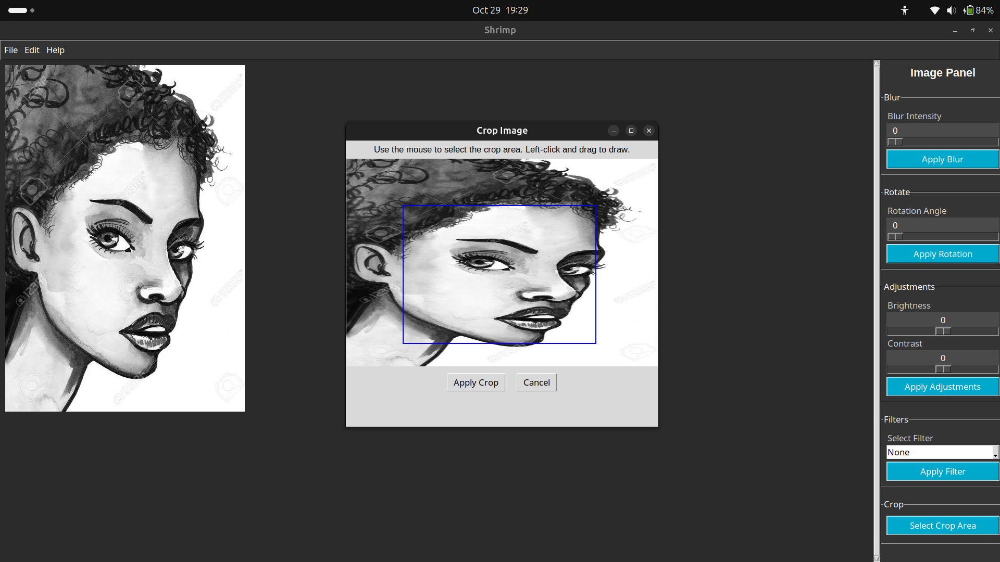

Making an Image Editor: Shrimp
October 2024 - 4-minute readIn October 2024, I began learning computer vision with the OpenCV library. After following several tutorials, I decided to create a project that would apply image processing techniques as a test of what I had learned so far. The result was an image editor desktop application named Shrimp.

The image above shows Shrimp in action. The name "Shrimp" stands for Smart High-Resolution Image Manipulation Program. You can check out the project’s code and details on GitHub.
Tech Stack
Shrimp is built using: Python, OpenCV, tkinter
You can watch a demo of the project on Youtube
Features
Shrimp offers several essential image editing features, including:
- Blur: Apply various levels of blur to soften images.
- Rotation: Rotate images to any angle for the perfect alignment.
- Grayscale: Convert images to black and white.
- Sepia: Add a classic, warm filter to images.
- Negative: Invert colors for a high-contrast effect.
- Brightness & Contrast Adjustments: Fine-tune image lighting and contrast for ideal results.
Challenges & Learnings
Building Shrimp was a rewarding experience that also came with challenges:
- Real-time updates: Ensuring changes appeared instantly as users adjusted settings required careful optimization between OpenCV and TKinter.
- UI Integration: Learning to balance simplicity and functionality in a GUI built with TKinter.
Through these challenges, I learned a lot about optimizing Python code for better performance in interactive applications.